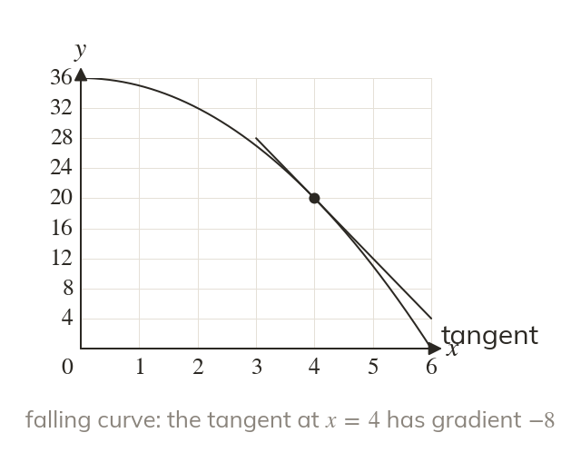

The rate changes along a curve
A curve's gradient changes from point to point. A tangent touches the curve and shares its gradient there.
On a curve the gradient is different at every point, so a rate of change belongs to one instant. A tangent touches the curve at that point and shares its gradient there.